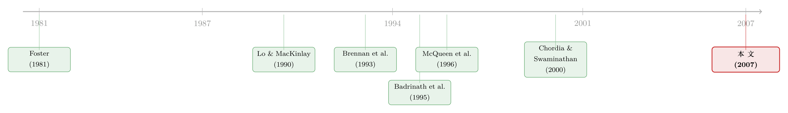

大公司先动，小公司后知——一条藏在「行业」里的信息暗线
本文读的是 Hou (2007, Review of Financial Studies)：大公司的股价领先小公司，这个著名的「领先滞后效应」其实几乎全部是同一行业内部的现象——一旦控制住行业内的领先滞后，跨行业、市场层面的领先滞后就消失了。更妙的是，这种滞后主要由小公司对坏消息的迟钝反应驱动，而它本质上是小公司对同行业大公司盈余公告的「后漂移」。
1 一个老问题：为什么小公司总是「慢半拍」？
先抛一个早就被发现、却一直没讲清楚的事实。
在美国股市里，小公司这周的收益率，能被大公司上周的收益率预测；可反过来，大公司这周的收益率，却预测不了小公司上周的收益率。这就是所谓的 领先滞后效应 (lead-lag effect)：信息好像先砸进大公司的价格，过一阵子才慢慢渗到小公司里去。这个不对称的相关性，最早是 Lo 和 MacKinlay (1990) 系统记录下来的。
问题是——为什么？
一个自然的怀疑是：这会不会只是统计假象？比如非同步交易 (nonsynchronous trading)，小公司成交稀疏，价格更新滞后，于是制造出虚假的滞后相关；又或者是时变的预期收益 (time-varying expected returns)，小公司本身自相关高，再叠加大小公司同期高度相关，看上去就像大公司在「领先」。这两条解释都很有道理。但 Lo 和 MacKinlay (1990)、Mech (1993)、McQueen 等 (1996)、Chordia 和 Swaminathan (2000) 反复检验后发现：它们顶多只能解释观测到的领先滞后里很小的一部分。
于是剩下第三类、也是更有意思的一类解释：某些公司就是比另一些公司反应得更慢。信息在市场里不是瞬间传遍的，它会因为不完全市场、有限的投资者注意力、卖空约束、机构的法律限制等等摩擦，慢慢地扩散。Brennan 等 (1993)、Badrinath 等 (1995) 沿着这条路走，发现除了规模之外，分析师覆盖、机构持股、成交量都和领先滞后有关。
这篇文章要做的，是把这条「信息慢慢扩散」的解释钉死。而它用的那把钥匙，出奇地简单：行业。
2 核心直觉：信息是「按行业」打包的
为什么是行业？
想一想信息到底是关于什么的。同一个行业里的公司，在同一个产品市场里竞争，它们的经营决策互相牵制，对供需变化、技术革新、监管调整的反应高度相似；行业扩张或收缩时，它们的增长机会、投融资决策也是高度相关的。换句话说，一条关于某家公司的消息，对它的同行往往比对行业外的公司更有价值。
那么逻辑链就清楚了：如果领先滞后效应真的来自信息的缓慢扩散，而信息又是在行业层面聚集的，那么这种效应就应该主要发生在同一行业内部——大公司先消化行业消息，小公司后知后觉。
这就是全文反复要讲透的那一个核心：领先滞后效应，本质上是一个 行业内 (intra-industry) 现象。
3 识别策略：两条 VAR，和一个「谁预测谁」的赛跑
怎么把这个直觉变成可检验的命题？作者的做法很干净。
每年六月底，按照 Ken French 网站的定义，把 CRSP 上股票代码为 10 或 11 的全部股票（剔除 ADR、封闭式基金、REIT），依四位 SIC 码归入 12 个行业。在每个行业内部，再按六月底市值分成三档规模组合（最小 30%、中间 40%、最大 30%），分别记小组合为 Portfolio 1、大组合为 Portfolio 3，计算等权周收益率。
注意这里的精巧之处：所有的规模排序都是在行业内部做的。这样一来，大小公司之间的领先滞后，天然就是「同行业、不同规模」之间的关系。
接着，一个自然的问题是：怎么把「大公司领先小公司、而非反过来」这件事正式地检验出来，同时还能排除掉前面那个「小公司自相关 + 同期相关」的时变预期收益假说？作者跨 12 个行业联合估计了下面这对向量自回归 (vector autoregression, VAR)：
$$ R_{i,1}(t)=a_{i,0}+\sum_{k=1}^{K} a_{k}R_{i,1}(t-k)+\sum_{k=1}^{K} b_{k}R_{i,3}(t-k)+e_{i,1}(t) $$
$$ R_{i,3}(t)=c_{i,0}+\sum_{k=1}^{K} c_{k}R_{i,1}(t-k)+\sum_{k=1}^{K} d_{k}R_{i,3}(t-k)+e_{i,3}(t) $$
其中 \(R_{i,1}(t)\)、\(R_{i,3}(t)\) 分别是行业 \(i\) 里最小 30%、最大 30% 公司在第 \(t\) 周的收益率。关键就盯住第一条方程里的那一串 \(b_k\)：它衡量的是「大公司过去的收益率，在已经控制住小公司自己的滞后收益率之后，还能不能预测小公司当前的收益率」。
让我把第一条方程拆开，看清每一块在干什么：
逻辑的分水岭就在这里：如果领先滞后只是「小公司自相关 + 大小公司同期高相关」的假象，那么一旦控制住小公司自己的滞后收益 \(R_{i,1}(t-k)\)，那串 \(b_k\) 就应该和零没区别。反之，如果是大公司真的对共同信息反应更快，那么 \(b_k\) 不仅显著为正，而且它的预测力还应当强于反方向的 \(c_k\)——也就是要满足 \(\sum_{k=1}^{K} b_k > \sum_{k=1}^{K} c_k\)。
4 主要结果：领先滞后，几乎全在行业内部
结果干净利落。
第一，大公司确实领先小公司，而且经济意义不小。 在四滞后 (K=4) 回归里 \(\sum b_k = 0.26\)（F 统计量 = 302.30），一滞后 (K=1) 回归里 \(\sum b_k = 0.18\)（t 值 = 24.02），都在 1% 水平上显著。怎么读这个 0.18？上周大公司收益率每下降 1%，本周同行业小公司收益率就跟着下降 18 个基点。而表 1 里大公司收益率的平均标准差是 2.45%，于是大公司收益率下降一个标准差，平均会拖累小公司收益率下降 44 个基点。这不是统计学意义上的「显著但微不足道」，是实打实的量级。
第二，反方向几乎没有。 无论一滞后还是四滞后，\(\sum c_k\) 都和零没有区别；而跨方程检验 \(\sum b_k = \sum c_k\) 在 1% 水平上被轻松拒绝。大公司领先小公司——单向的。
第三，也是最漂亮的一步：跨行业的领先滞后，是「假」的。 作者在第一条方程右边再加入行业外大公司组合的滞后收益 \(R_{j\neq i,3}(t-k)\)：
$$ R_{i,1}(t)=a_{i,0}+\sum_{k=1}^{K} a_{k}R_{i,1}(t-k)+\sum_{k=1}^{K} b_{k}R_{i,3}(t-k)+\sum_{k=1}^{K} f_{k}R_{j\neq i,3}(t-k)+e_{i,1}(t) $$
结果是：行业内的 \(\sum b_k\) 依旧稳健显著，而行业外的 \(\sum f_k\) 在四滞后里只有 0.02 且不显著。反过来更震撼——作者先把个股收益率对所在行业大、小组合过去四周的收益率做回归，用残差（即「洗掉」了行业内领先滞后之后的收益率）去构造不分行业的规模组合，再跑市场层面的 VAR。结果市场层面的领先滞后整个塌掉了：\(R_1(t)\) 对 \(R_3(t-1)\) 的系数变成 $-0.03$（t = $-0.81$），毫不显著。
换句话说，我们过去二十年盯着看的那个「市场层面大公司领先小公司」，剥开来看，全是行业内部领先滞后的投影。这是本文最有冲击力的一句话。
5 反转：迟钝，主要发生在坏消息来的时候
到这里，故事本可以收尾了。但真正关键的一步在于作者继续追问：如果是市场摩擦和制度约束让价格反应迟钝，那么——坏消息和好消息，应该是不对称的。
为什么？因为卖空约束、流动性枯竭、机构的法律限制这些摩擦，在坏消息来临时往往更刺手。好消息你可以买进去推动价格，坏消息你想卖却未必卖得动（尤其卖空受限时），价格的向下调整就更慢。于是作者在一滞后 VAR 里加上正负收益的虚拟变量：
$$ R_{i,1}(t)=a_{i,0}+a_{1}R_{i,1}(t-1)D_{i,1}+a_{2}R_{i,1}(t-1)+b_{1}R_{i,3}(t-1)D_{i,3}+b_{2}R_{i,3}(t-1)+e_{i,1}(t) $$
其中 \(D_{i,3}=1\) 当 \(R_{i,3}(t-1)>0\)，否则为零。于是 \(b_2\) 是大公司负收益时的预测系数，\(b_2+b_1\) 才是正收益时的。结果：\(b_2 = 0.28\)（t = 17.83），而交互项 \(b_1 = -0.16\)（t = $-6.86$）。也就是说，上周大公司收益为负时，对本周小公司的预测系数是 0.28；上周大公司收益为正时，预测系数只剩 $0.28-0.16=0.12$。
坏消息的领先滞后，是好消息的两倍多。这正是信息缓慢扩散假说预言的不对称，也和 Diamond 和 Verrecchia (1987) 关于卖空约束延缓坏消息进入价格的逻辑严丝合缝。
这一步是全文从「相关性」走向「机制」的桥。如果领先滞后只是非同步交易或时变预期收益，没有任何理由预期它对好坏消息不对称；而摩擦驱动的缓慢扩散，则必然预期坏消息更慢。这个不对称，是无法被那两个对手假说自然解释的。
6 横截面：哪些行业的小公司最「迟钝」？
既然机制是信息扩散的快慢，那就该有可观测的横截面规律：信息环境越差的行业，领先滞后越强。
作者一一验证：更小、竞争程度更低、分析师覆盖更少、机构持股更低、成交量更小、分析师分歧更大的行业，领先滞后效应更明显——这些恰恰是事前就该预期「信息扩散更慢」的行业。在公司层面，作者还借鉴 Hou 和 Moskowitz (2005) 的思路给每只股票算了一个价格延迟 (price delay) 指标（衡量股价对共同冲击反应的平均滞后），发现规模、分析师覆盖、机构持股、成交量、市场份额、分析师分歧，全都和价格延迟显著相关，方向也都与信息假说一致。
还有一个很有画面感的发现：行业领导者领先行业追随者。市场份额高的公司（行业龙头）先消化消息，再扩散到份额低的公司。新信息总是先进龙头的价格。
7 把暗线接到盈余公告上
最后，作者给「信息」这个抽象词找了个实体：盈余公告。
如果领先滞后真是信息驱动的，那它应该和一个会计学里早有记载的现象对得上——行业内信息转移 (intra-industry information transfer)，即一家公司发盈余公告，会影响同行业其他公司的股价（Foster, 1981）。作者发现：领先滞后效应，正与小公司对同行业大公司盈余意外的延迟反应有关——大公司一旦公布出乎意料的盈余，小公司的股价会滞后地、像「公告后漂移」 (post-earnings-announcement drift) 那样慢慢跟上。这个结果对不同的盈余意外度量、不同的实证技术都稳健。
至此，那条暗线终于完整：行业消息 → 先进龙头/大公司价格 → 因摩擦缓慢扩散（坏消息更慢）→ 小公司滞后反应 → 表现为行业内领先滞后，并在盈余公告上留下指纹。
8 文献脉络
这条研究线，是从一个「异常的相关性」一步步走向「信息机制」的。
最早，Lo 和 MacKinlay (1990) 记录了大小公司之间不对称的交叉自相关，并指出非同步交易和过度反应都解释不了它。与此同时，Conrad 和 Kaul (1988, 1989) 提出了时变预期收益的对手假说。会计学这边其实更早就埋下了伏笔——Foster (1981) 记录了盈余公告的行业内信息转移。
接着，Brennan 等 (1993) 和 Badrinath 等 (1995) 把视角转向「谁反应慢」：分析师覆盖、机构持股成了领先滞后的决定因素。McQueen 等 (1996) 进一步发现好坏消息反应的不对称，Chordia 和 Swaminathan (2000) 则指出成交量是关键。

而本文（Hou, 2007）所处的位置，是把这些散落的线索统一到一个组织原则——行业——之下：它证明大小公司的领先滞后几乎全是行业内现象，市场层面的版本只是它的投影；它把好坏消息的不对称、横截面的信息环境差异、以及盈余公告后漂移，全都收进了「行业信息缓慢扩散」这一个框架里。后来沿着「经济联系驱动的可预测性」往下走的大量研究，很多都能在这篇文章里找到方法论的影子。（关于经济联系如何制造跨股票可预测性，可参见《评级一起动，股价却慢半拍——藏在债券市场里的「经济联系」》 与《互补品的暗线：当电池涨价，芯片厂的股票为什么会先动？》；关于信息扩散的「慢」还能慢在哪里，可参见《被「同一批股东」拖慢的消息：当机构持股反而让信息扩散得更慢》 和《股价撞上「天花板」：52周高点如何拖慢了对客户消息的反应》。）
9 评论与延伸（Q&A + 研究方向）
(a) 几个可能的疑问
Q：这不就是「动量」换了个名字吗？
不是。动量是「资产对自己过去收益的延续」，而这里是「小公司对大公司过去收益的反应」，是一种横截面的、跨资产的可预测性（cross-autocorrelation）。两者机制有重叠（都可来自信息缓慢扩散），但本文的对象始终是大→小的交叉预测，且作者特意控制了小公司自己的滞后收益，正是为了把动量那部分剥离出去。
Q：会不会还是非同步交易在作怪？小公司成交稀，价格滞后是「假」的。
作者做了「跳过一周」(skip a week) 的检验：把解释变量换成第 \(t-5\) 到 \(t-2\) 周的收益率，从而避开最容易受买卖价差跳动、非同步交易污染的近端。系数确有下降（因为大部分显著性集中在 1 周滞后），但 \(\sum b_k\) 依旧高度显著，\(\sum b_k=\sum c_k\) 仍在 1% 被拒绝。微观结构问题影响有限。
Q：那「时变预期收益」假说被排除干净了吗？
这是本文设计最用力的地方。时变预期收益假说的核心是：大公司滞后收益只是小公司滞后收益的「噪声代理」，一旦控制小公司自身滞后收益，交叉项应归零。可结果是 \(b_k\) 在控制之后依然显著为正、且远大于 \(c_k\)。更要命的是，时变预期收益无法解释坏消息领先滞后是好消息两倍这个不对称。
Q：12 个行业是不是太粗了？换个分类会不会结论就变了？
作者明说选 12 个是「既要行业足够多、又要每个行业内公司足够多以免组合太薄」的折中，并报告用其他行业分类方法结论基本不变。当然，行业定义本身是个见仁见智的选择，更细的分类（如 48 行业、或基于文本的同行）是否会放大或削弱效应，是个开放问题。
Q：第二个子样本里效应变弱，是不是说这个效应在「消失」？
1963–1982 与 1982–2001 两段都高度显著，但后半段确实更弱。作者把这解读为支持信息假说的证据：后半段恰逢市场摩擦放松、信息披露增加、交易机制改善，股价在信息上变得更有效率，扩散更快，领先滞后自然就弱了。这是「机制对了，预测也对」的一个旁证。
Q：那这个效应能不能拿来赚钱？
文章是「解释现象」而非「兜售策略」。0.18 的一周系数听上去诱人，但小公司组合等权、交易成本高、容量有限，真实可执行的超额收益要打很大折扣——尤其效应集中在最难交易的小、冷门行业里。把它当成理解市场效率的窗口，比当成阿尔法更靠谱。
(b) 几个可能的研究问题与提案
1. 公司债市场里的行业内领先滞后。
【经济故事】股票里大公司领先小公司，那么在信用市场，大发行人的债券利差变动，是否领先同行业小发行人的利差？信用市场的摩擦（流动性差、做市商资本约束）比股票更重，坏消息的不对称应当更夸张。 【可行性】中。数据用 TRACE 成交 + Mergent FISD 发行人特征，按行业-发行人规模分组跑 VAR。难点在于债券成交稀疏（非同步问题比股票严重），需用「跳过若干天」和按成交活跃度加权来处理，识别上要小心把流动性滞后与信息滞后区分开。
2. 外资持有人是「加速器」还是「减速器」？
【经济故事】本文说信息环境越差、扩散越慢。那么外资进入一个行业（带来分析师覆盖、跨国信息）究竟是加快了行业内信息扩散、削弱领先滞后，还是因为外资偏好龙头、反而拉大了龙头与本地小公司的差距？ 【可行性】中。用某市场的「外资可投资度」(investability) 放开作为准自然实验（这是一个干净的外生冲击），事件前后比较行业内领先滞后强度。挑战是要控制同期的其他市场化改革。
3. 价格延迟与债券流动性溢价的交叉。
【经济故事】Hou 和 Moskowitz (2005) 的「价格延迟」预测股票截面收益。债券的「价格延迟」（对系统性信用冲击反应的滞后）是否也带正的预期收益溢价？这把信息摩擦和流动性溢价接到了一起。 【可行性】高。构造债券层面的延迟指标（对市场信用因子的分布滞后回归），与已有流动性度量（如 size-adapted 流动性、Roll 估计）做横截面竞赛。数据成熟，识别为相关性证据，需诚实承认难做因果。
4. 文本同行 vs SIC 同行，谁的领先滞后更强？
【经济故事】本文用 SIC 定义行业，但真正决定信息相关性的也许是产品市场的「相似度」。用文本相似度 (TNIC, Hoberg-Phillips) 定义同行，领先滞后是否更强、更干净？这能检验「行业到底是不是正确的信息聚集单位」。 【可行性】高。数据公开（10-K 文本相似度矩阵 + CRSP），方法是把 SIC 同行组合替换为相似度同行组合再跑同一套 VAR，做horse race。是个 doable 的实证比较。
5. 缓慢扩散在「注意力稀缺日」是否更强？
【经济故事】如果领先滞后来自有限注意力，那么在投资者注意力被分散的时刻（如同日有大量其他公司发公告、或重大宏观事件日），小公司对大公司消息的滞后应当更长。 【可行性】中。用同日公告数量、宏观数据发布日等作为注意力稀缺的代理，与盈余公告后漂移的强度交互。难点是注意力代理的内生性，需要找更外生的冲击（如不可预期的突发新闻挤占版面）。
参考文献
Badrinath, S. G., J. R. Kale, and T. H. Noe (1995). Of Shepherds, Sheep, and the Cross-Autocorrelations in Equity Returns. Review of Financial Studies 8(2), 401–430.
Brennan, M. J., N. Jegadeesh, and B. Swaminathan (1993). Investment Analysis and the Adjustment of Stock Prices to Common Information. Review of Financial Studies 6(4), 799–824.
Chordia, T., and B. Swaminathan (2000). Trading Volume and Cross-Autocorrelations in Stock Returns. Journal of Finance 55(2), 913–935.
Conrad, J., and G. Kaul (1988). Time-Varying Expected Returns. Journal of Business 61(4), 409–425.
Conrad, J., and G. Kaul (1989). Mean-Reversion in Short-Horizon Individual Security Returns. Journal of Financial Economics 29(2), 365–384.
Diamond, D., and R. Verrecchia (1987). Constraints on Short-Selling and Asset Price Adjustment to Private Information. Journal of Financial Economics 18(2), 277–311.
Foster, G. (1981). Intra-Industry Information Transfers Associated with Earnings Release. Journal of Accounting and Economics 3(3), 201–232.
Hou, K. (2007). Industry Information Diffusion and the Lead-lag Effect in Stock Returns. Review of Financial Studies 20(4), 1113–1138.
Hou, K., and T. J. Moskowitz (2005). Market Frictions, Price Delay, and the Cross-Section of Expected Returns. Review of Financial Studies 18(3), 981–1020.
Lo, A. W., and A. C. MacKinlay (1990). When Are Contrarian Profits Due to Stock Market Overreaction? Review of Financial Studies 3(2), 175–205.
McQueen, G., M. Pinegar, and S. Thorley (1996). Delayed Reaction to Good News and the Cross-Autocorrelation of Portfolio Returns. Journal of Finance 51(3), 889–919.
Mech, T. S. (1993). Portfolio Return Autocorrelation. Journal of Financial Economics 34(3), 307–344.